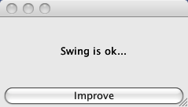

The simplest application that demonstrates most of the concepts in Monkeybars is a simple form with a label and a button. When the button is clicked, the label's text changes. This is what our finished application will look like.

To get this working we need to do the following:
Download the completed project. This zip includes the Netbeans project which you can open with Netbeans 6.1 or later. This zip does not include the packaged files built via Rawr but you can regenerate them using "rake rawr:jar", "rake rawr:bundle:app" or "rake rawr:bundle:exe".